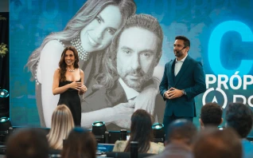

Imersão Presencial · 19 e 20 de Junho de 2026
Um evento para médicos que estão prontos para romper com um sistema que os limita, e assumir o controle da própria carreira.
Na Doctor 360 Bahia, você vai mergulhar em uma imersão estratégica para entender como sair do modelo que limita sua carreira e assumir o controle do seu crescimento.
◆ 19 e 20 de Junho de 2026 — Salvador, Bahia
Quero aplicar para a Doctor 360 - Bahia
